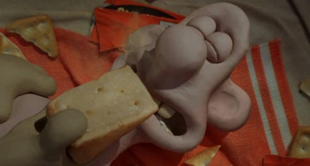

Main Page
Login Page
Sign Up Page
Club Activities
Fremont Cheese Sniffers

Club Activities
Types of Cheese to Sniff
🧀 Cheddar
🧀 Parmesan
🧀 Mozzarella
Advanced Cheeses to sniff
😬 Blue Cheese
😬 Goat Cheese
😬 Bleu Cheese
Name
Date